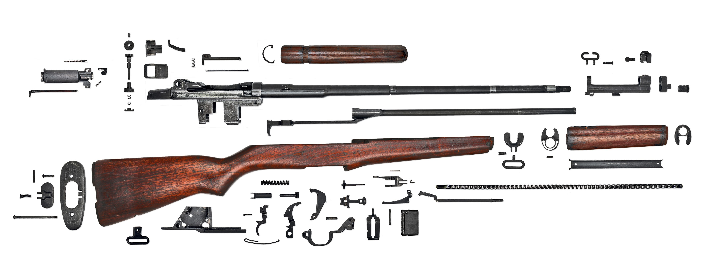

M1 Garand

Assemble/Disassemble
National Origin: United States
Cartridge: .30-06 Springfield, 7.62x51mm NATO (Post-WWII conversions)
Feed System: 8-round internal magazine w/ en-bloc clips
Action: Gas-operated, Semi-automatic
Perhaps the most iconic American weapon of World War II, the M1 Garand was the first semi-automatic rifle to see mass adoption by a major military power. Designed by Canadian-American John Garand, it gave American personnel a major firepower advantage in both World War II and the Korean War. It would go on to see use by indigenous forces in Korea, and is still used by Haiti and Syria, among other countries, in irregular militias today.
 Back
Back